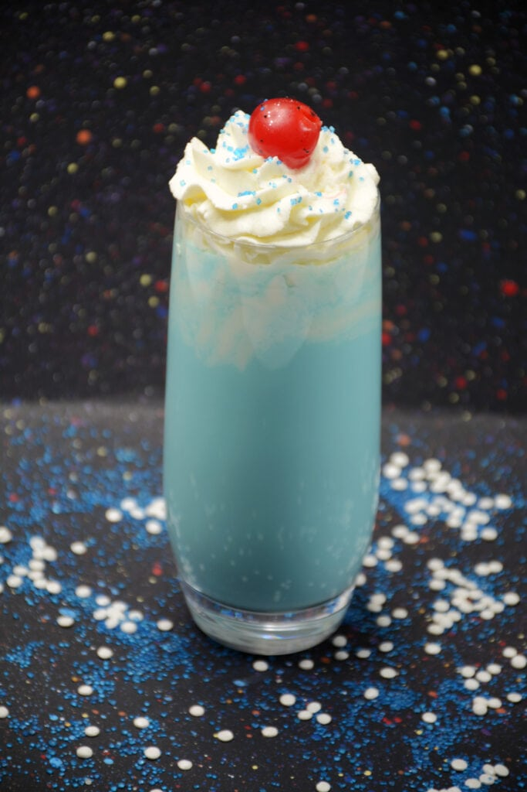

BANTHA'S BLUE MLKSHAKE

INGREDIENTS
- 4 large scoops (about 1 1/2 c.) vanilla ice cream
- 1/4 c. bantha's blue milk
- Whipped topping, for garnish
- Sprinkles, for garnish
- Endor's ewok cherry, for garnish
DIRECTIONS
- In a blender, blend together ice cream and bantha's blue milk on slow until smooth.
- Pour into a glass and garnish with whipped topping, sprinkles, and a cherry, if desired.